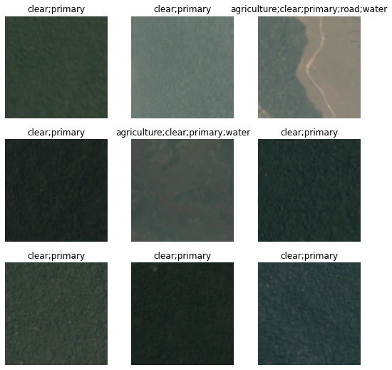
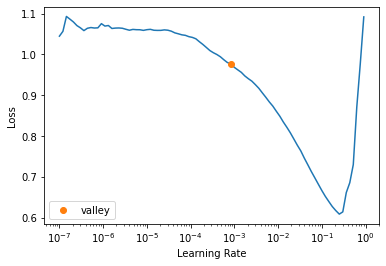
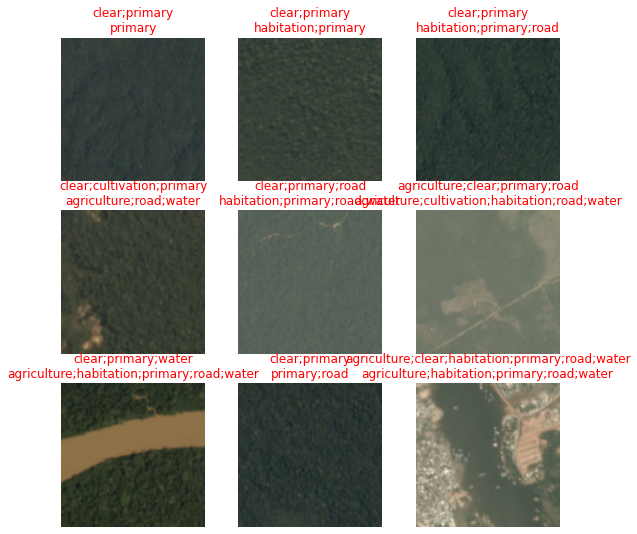
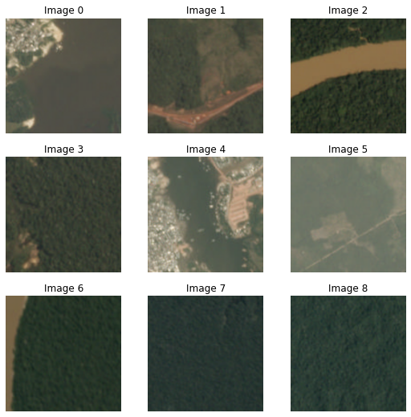
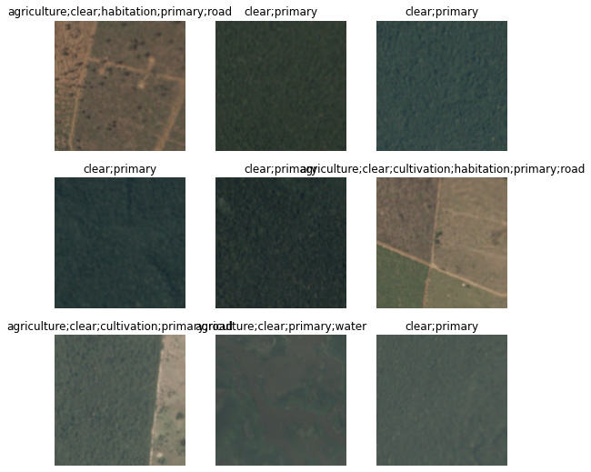
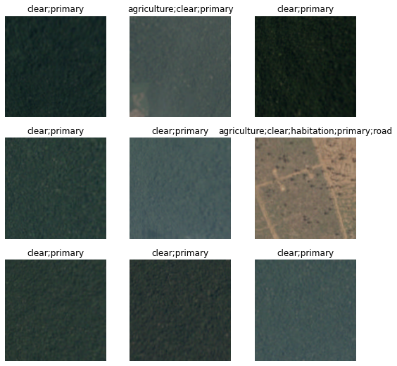
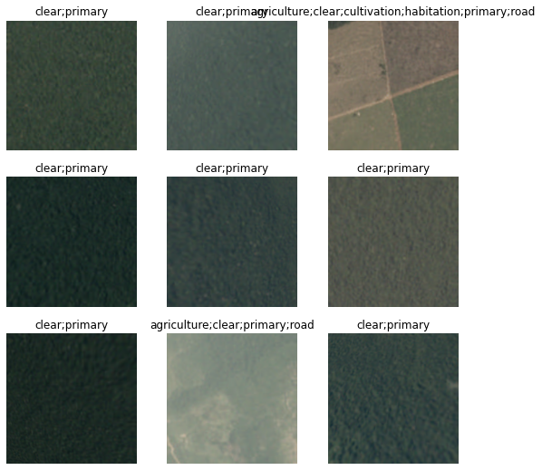
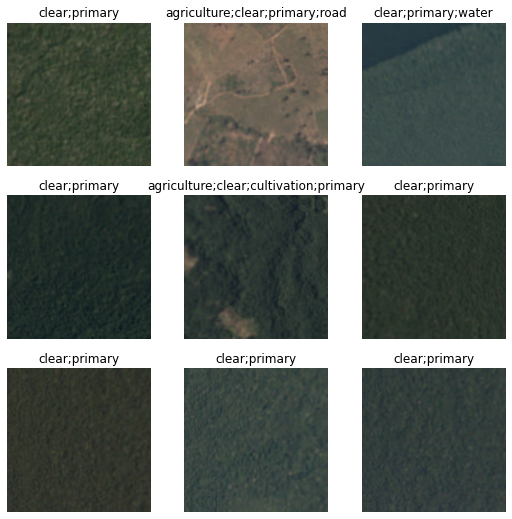

path = untar_data(URLs.PLANET_TINY)
path.ls()(#3) [Path('/root/.fastai/data/planet_tiny/labels.csv'),Path('/root/.fastai/data/planet_tiny/models'),Path('/root/.fastai/data/planet_tiny/train')]In this project we will be using a deep learning model to help classify satellite images of the amazon rain forest. Here the main objective is not actually to get the best results for this task, rather to use this dataset to illustrate the use of the Fastai deep learning library - in particular to demonstrate the uses of the high-level api as well as the mid-level api and show how this can be used to configure different types of datasets for different types of problems.
The amazon dataset comes from the Understanding the Amazon from Space project, which aims:
‘…to label satellite image chips with atmospheric conditions and various classes of land cover/land use. Resulting algorithms will help the global community better understand where, how, and why deforestation happens all over the world - and ultimately how to respond.’
Key aspects of this task include.
While the main dataset has over 40,000 images - we will be using a small subset of this of just 200 images.
In an earlier project I looked at a different dataset of satellite images, in this case for an image segmentation task rather than classification.
Let’s see how we can use the Fastai library to prepare our data to perform this task, and start by loading the data.
path = untar_data(URLs.PLANET_TINY)
path.ls()(#3) [Path('/root/.fastai/data/planet_tiny/labels.csv'),Path('/root/.fastai/data/planet_tiny/models'),Path('/root/.fastai/data/planet_tiny/train')]So we have a folder called ‘train’ which we assume has the images, lets take a look to check.
(path/"train").ls()[:5](#5) [Path('/root/.fastai/data/planet_tiny/train/train_39223.jpg'),Path('/root/.fastai/data/planet_tiny/train/train_5302.jpg'),Path('/root/.fastai/data/planet_tiny/train/train_34793.jpg'),Path('/root/.fastai/data/planet_tiny/train/train_28156.jpg'),Path('/root/.fastai/data/planet_tiny/train/train_15839.jpg')]We also have a labels.csv file, which would normally have the image names and their associated labels, lets verify this.
df = pd.read_csv(path/"labels.csv")
df.head()| image_name | tags | |
|---|---|---|
| 0 | train_31112 | clear primary |
| 1 | train_4300 | partly_cloudy primary water |
| 2 | train_39539 | clear primary water |
| 3 | train_12498 | agriculture clear primary road |
| 4 | train_9320 | clear primary |
Let’s check how many images we have.
df.shape(200, 2)So this is a multi-label classification task, each image has one or more labels which we hope to predict. Lets get an idea of how many example images we have for each label.
new_df = df['tags'].str.split(expand=True).stack().value_counts().reset_index()
new_df.columns = ['Word', 'Frequency']
print(new_df.shape)
new_df.head(20)(14, 2)| Word | Frequency | |
|---|---|---|
| 0 | primary | 190 |
| 1 | clear | 139 |
| 2 | agriculture | 61 |
| 3 | partly_cloudy | 42 |
| 4 | road | 41 |
| 5 | water | 31 |
| 6 | cultivation | 28 |
| 7 | habitation | 19 |
| 8 | haze | 11 |
| 9 | cloudy | 8 |
| 10 | bare_ground | 5 |
| 11 | artisinal_mine | 4 |
| 12 | blooming | 3 |
| 13 | selective_logging | 2 |
So we can see this is a very imbalanced dataset, some labels such as primary occur alot, wheras other labels such as selective_logging only occur twice.
As we are mainly focussing on the use of fastai not making the best model, we will be using the fastest method of creating a training & validation datasets using the random split method. Given we have some categories that don’t have many examples, if we do a random split its possible we could have some labels only in the training or valdiation sets, and this will create an error as we can’t have labels in the validation set that are not in the training set.
Let’s deal with this by removing the images that have low-frequency labels, to try to reduce the risk of this error so we can focus on how to use the fastai library.
df = df.copy()
df = df[df["tags"].str.contains("haze|cloudy|bare_ground|artisinal_mine|blooming|selective_logging") == False]
new_df = df['tags'].str.split(expand=True).stack().value_counts().reset_index()
new_df.columns = ['Word', 'Frequency']
print(new_df.shape)
new_df.head(20)(7, 2)| Word | Frequency | |
|---|---|---|
| 0 | clear | 127 |
| 1 | primary | 126 |
| 2 | agriculture | 38 |
| 3 | road | 26 |
| 4 | water | 18 |
| 5 | cultivation | 14 |
| 6 | habitation | 10 |
We now have a second issue to deal with, the image names in our labels.csv is not a complete file name, this will make it more difficult to read in the image files. Lets create a new column that has the complete image file name.
df['filename'] = df['image_name'] + '.jpg'
df.head()| image_name | tags | filename | |
|---|---|---|---|
| 0 | train_31112 | clear primary | train_31112.jpg |
| 2 | train_39539 | clear primary water | train_39539.jpg |
| 3 | train_12498 | agriculture clear primary road | train_12498.jpg |
| 4 | train_9320 | clear primary | train_9320.jpg |
| 5 | train_28430 | agriculture clear cultivation primary road | train_28430.jpg |
In a previous article i gave an introduction to the Fastai layered API

In this article we will make use of the High & Mid level API.
This level API is the simplest to use, having many preset defaults that make it easy to load and setup data for a range of deep learning tasks.
Let’s use it now to set up our amazon image data.
dls = ImageDataLoaders.from_df(df, path, fn_col=2, folder='train', label_delim=' ',
item_tfms=Resize(460), batch_tfms=aug_transforms(size=224))
dls.show_batch()
So a few things to note which the Fastai high level api has done:
So we can see we have a good level of configurability even at the high level api.
It will also be helpful to set up some metrics to measure our progress during training, specific to being a multi labelled classification task, and having an unbalanced dataset. A Good metric for this situation would be an F1 score for multiple classes, so lets set up some metrics for this now.
f1_macro = F1ScoreMulti(thresh=0.5, average='macro')
f1_macro.name = 'F1(macro)'
f1_samples = F1ScoreMulti(thresh=0.5, average='samples')
f1_samples.name = 'F1(samples)'So we are almost ready to create our model and start training.
One consideration we have when creating a model is which model to use? as of date of this article, there are many pre-trained deep learning vision models, and many new ones being added. Which should we use?
Jeremy Howard, one of the co-founders of FastAI completed a project where he looked at a number recent of vision models and evaluated and ranked them by different criteria.
These were based on Ros Wightmanns list of Pytorch state of the art image models library timm.
Looking at these models and considering this use case: i’d like the best performing model but the best smallest model as we are not focussing here on getting the best results, rather to just demonstrate the usage of the Fastai library.
So looking with this criteria, i’ve selected the ‘convnext_small_in22k’ pre-trained image model to use.
Let’s now create the model using the high-level api function vision_learner.
learn = vision_learner(dls, 'convnext_small_in22k', metrics=[partial(accuracy_multi, thresh=0.5), f1_macro, f1_samples])So we have created our model, using our data, and added the metrics to use.
But what about the model learning rate? for this we can use another great Fastai api function lr_find().
For more information on this concept and the research behind it, including discriminative learning rates this is a great article.
learn.lr_find()SuggestedLRs(valley=0.0008317637839354575)
So this gives us a good idea of the a good learning rate to use, lets set this and train the model for 2 epochs.
learn.fine_tune(2, 3e-2)| epoch | train_loss | valid_loss | accuracy_multi | F1(macro) | F1(samples) | time |
|---|---|---|---|---|---|---|
| 0 | 1.044040 | 2.020892 | 0.497143 | 0.312559 | 0.430190 | 00:02 |
| epoch | train_loss | valid_loss | accuracy_multi | F1(macro) | F1(samples) | time |
|---|---|---|---|---|---|---|
| 0 | 0.955900 | 1.813314 | 0.411429 | 0.347462 | 0.411784 | 00:04 |
| 1 | 0.914945 | 1.890064 | 0.554286 | 0.363607 | 0.453518 | 00:04 |
We can see our model is slowly starting to improve.
Let’s see how our model is predicting labels for our satellite images.
learn.show_results()
We can also get an idea of which images the model finds hardest to predict by using the plot_top_losses() function.
interp = Interpretation.from_learner(learn)
interp.plot_top_losses(9)| target | predicted | probabilities | loss | |
|---|---|---|---|---|
| 0 | clear;habitation;primary;road;water | agriculture;cultivation;habitation;road;water | TensorBase([1.0000e+00, 5.3429e-10, 9.1896e-01, 5.3812e-01, 1.8748e-02,\n 9.9999e-01, 9.9779e-01]) | 5.9950785636901855 |
| 1 | agriculture;clear;habitation;primary;road | agriculture;cultivation;habitation;primary;road;water | TensorBase([1.0000e+00, 1.3865e-08, 9.7993e-01, 9.4586e-01, 5.2794e-01,\n 9.9999e-01, 9.9923e-01]) | 4.266438961029053 |
| 2 | clear;primary;water | agriculture;habitation;primary;road;water | TensorBase([9.9979e-01, 5.7836e-05, 1.7540e-01, 7.1101e-01, 5.7885e-01,\n 9.9740e-01, 9.9980e-01]) | 3.7381298542022705 |
| 3 | clear;cultivation;primary | agriculture;road;water | TensorBase([9.9726e-01, 3.5533e-04, 2.8459e-01, 3.0627e-01, 3.5213e-01,\n 9.9678e-01, 9.3701e-01]) | 3.573106050491333 |
| 4 | agriculture;clear;habitation;primary;road;water | agriculture;habitation;primary;road;water | TensorBase([9.9999e-01, 6.4912e-11, 1.6498e-01, 8.6925e-01, 8.6978e-01,\n 1.0000e+00, 9.9922e-01]) | 3.4169580936431885 |
| 5 | agriculture;clear;primary;road | agriculture;cultivation;habitation;road;water | TensorBase([9.9999e-01, 3.5587e-06, 6.8011e-01, 5.0741e-01, 3.6172e-02,\n 9.9992e-01, 9.7514e-01]) | 3.058271884918213 |
| 6 | clear;primary;water | agriculture;habitation;primary;road;water | TensorBase([9.9094e-01, 1.3812e-04, 4.5300e-01, 6.2815e-01, 6.4152e-01,\n 7.7717e-01, 8.5307e-01]) | 2.4697818756103516 |
| 7 | clear;primary | agriculture;habitation;primary;road;water | TensorBase([0.9377, 0.0013, 0.1471, 0.7862, 0.9317, 0.9659, 0.6219]) | 2.221360206604004 |
| 8 | clear;primary | agriculture;road | TensorBase([6.0217e-01, 3.6376e-04, 3.3483e-02, 3.6663e-01, 4.4091e-01,\n 5.4576e-01, 9.7288e-02]) | 1.5774089097976685 |

Using the mid-level api can give us more control over how the dataset is constructed, which will be determined by the task.
The Fastai data block tutorial is a great way to understand the methodology behind what the mid level api can do.
So there are many ways we could construct the data using the mid level api, however JH encourages us to consider a list of questions that can be helpful for choosing the best method which are:
So while our model input (x -images) and outputs (y - labels) are in the dataframe, we need to do need to do a little processing on these dataframe columns before being able to use them, for example the filenames need filepaths added, and the labels need splitting.
We can create a datablock this way to address these needs.
planet = DataBlock(blocks=(ImageBlock, MultiCategoryBlock),
get_x=ColReader('filename', pref=str(path/'train') + os.path.sep),
get_y=ColReader('tags', label_delim=' '),
item_tfms = Resize(460),
batch_tfms=aug_transforms(size=224))
dls = planet.dataloaders(df)
dls.show_batch()
We can see we used the get_x & get_y parameters to process the images and labels columns using the ColReader() function. We can also see how the answers to those questions directly translates to different parameters in the DataBlock function.
Another way we could approach this, for getting our images and labels correctly processed is by defining our own functions for doing this using a lambda function.
planet = DataBlock(blocks=(ImageBlock, MultiCategoryBlock),
get_x=lambda x:path/"train"/f'{x[2]}',
get_y=lambda x:x[1].split(' '),
item_tfms = Resize(460),
batch_tfms=aug_transforms(size=224))
dls = planet.dataloaders(df)
dls.show_batch()
Alternatively, for our lambda functions we could use the column names rather than the indexes.
planet = DataBlock(blocks=(ImageBlock, MultiCategoryBlock),
get_x=lambda o:f'{path}/train/'+o.filename,
get_y=lambda o:o.tags.split(),
item_tfms = Resize(460),
batch_tfms=aug_transforms(size=224))
dls = planet.dataloaders(df)
dls.show_batch()
Both of these previous methods would involve iterating over all the rows of the dataframe. For large datasets & dataframes, this could prove very costly in terms of time - not the ideal way for Fastai !
A better and faster way would be to use the from_columns() Datablock method. This uses a user-defined function passed in the get_items parameter to convert the columns into numpy arrays and work with these which would be quicker.
def _amazon_items(x): return (
f'{path}/train/'+x.filename, x.tags.str.split())
planet = DataBlock.from_columns(blocks=(ImageBlock, MultiCategoryBlock),
get_items=_amazon_items,
item_tfms = Resize(460),
batch_tfms=aug_transforms(size=224))
dls = planet.dataloaders(df)
dls.show_batch()
Let’s now train our model for a few more epochs and observe the progress.
learn.fine_tune(12, 1e-2)| epoch | train_loss | valid_loss | accuracy_multi | F1(macro) | F1(samples) | time |
|---|---|---|---|---|---|---|
| 0 | 0.839966 | 1.319353 | 0.628571 | 0.423056 | 0.526470 | 00:02 |
| epoch | train_loss | valid_loss | accuracy_multi | F1(macro) | F1(samples) | time |
|---|---|---|---|---|---|---|
| 0 | 0.816123 | 0.863024 | 0.662857 | 0.434543 | 0.519232 | 00:04 |
| 1 | 0.743988 | 0.717785 | 0.714286 | 0.561080 | 0.625896 | 00:04 |
| 2 | 0.748999 | 0.740482 | 0.645714 | 0.488145 | 0.593423 | 00:04 |
| 3 | 0.726016 | 0.943211 | 0.605714 | 0.451780 | 0.529645 | 00:04 |
| 4 | 0.710094 | 1.014733 | 0.622857 | 0.514764 | 0.472312 | 00:04 |
| 5 | 0.707066 | 0.860917 | 0.697143 | 0.643097 | 0.563126 | 00:04 |
| 6 | 0.692620 | 0.711039 | 0.702857 | 0.556803 | 0.558268 | 00:04 |
| 7 | 0.679113 | 0.690488 | 0.691429 | 0.542517 | 0.570459 | 00:04 |
| 8 | 0.668592 | 0.613841 | 0.720000 | 0.580288 | 0.608078 | 00:04 |
| 9 | 0.664969 | 0.561042 | 0.748571 | 0.617624 | 0.648078 | 00:04 |
| 10 | 0.652281 | 0.525281 | 0.760000 | 0.630952 | 0.665602 | 00:04 |
| 11 | 0.635785 | 0.508053 | 0.754286 | 0.626052 | 0.635316 | 00:04 |
In this article we used the Amazon images dataset to illustrate the different ways we can use the Fastai library to prepare the data for the task. We used both the high & mid level api, and in particular explored the many options the mid level api offers to make it easy and fast to prepare data for deep learning model training.